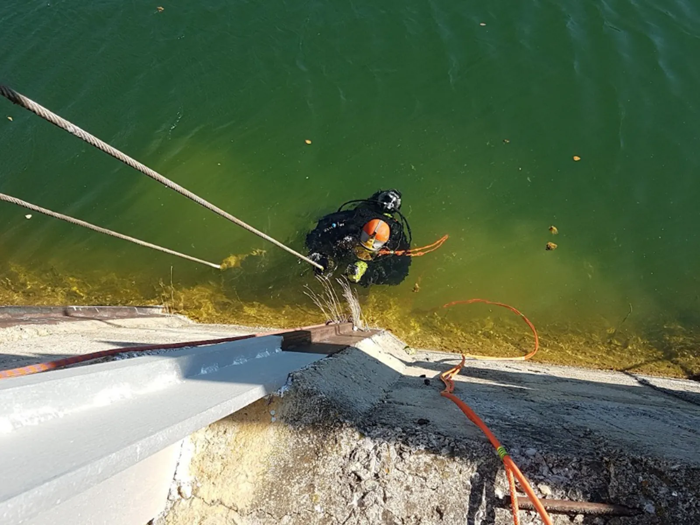

Обследование ГТС
Визуальный и инструментальный контроль сооружений, геодезические наблюдения и подводно-технические работы.

01 / Комплексно
Комплексное и предпроектное обследование
Обеспечение безопасной эксплуатации гидротехнических сооружений, а также оценка их состояния перед реконструкцией или восстановлением достигается путем проведения комплексных визуально-инструментальных обследований.
В основе обследования лежит проверка соответствия
- фактической прочности элементов, конструкций и устойчивости ГТС требованиям проекта;
- геометрических параметров и планово-высотного положения установленным пределам;
- глубин у сооружений и на операционных акваториях проектным значениям;
- максимально допускаемых нагрузок и воздействий расчетным значениям.
Результатом становится заключение о состоянии ГТС, годности к эксплуатации или необходимости реконструкции и капитального ремонта.
Три этапа обследования
- Подготовка. Изучение проектной и эксплуатационной документации, особенностей конструктивных решений и условий эксплуатации; разработка программы обследования.
- Визуальный осмотр. Определение качественного состояния каждого элемента и объекта в целом, фиксация проектных и эксплуатационных дефектов с разделением по значимости.
- Инструментальный контроль. Определение геометрических параметров, прочности бетона, остаточной толщины металла и уклонов; выполнение геодезической съемки и других измерений.
Цели и результат работ
- выявление дефектов и несоответствий отдельных элементов и конструкций;
- определение физического износа элементов и сооружения в целом;
- подготовка заключения о состоянии ГТС;
- вывод о годности к эксплуатации либо необходимости реконструкции или капитального ремонта.
Основная нормативная база
02 / Мониторинг
Мониторинг планово-высотного положения
Мониторинг портовых ГТС осуществляется в процессе строительства и эксплуатации с целью обеспечения безопасности, прогнозирования чрезвычайных ситуаций и защиты гидротехнических объектов.
На основе технических осмотров, геодезических наблюдений и измерительного контроля дают оценку состояния сооружения в условиях реальной эксплуатации и составляют заключение о возможности его нормальной эксплуатации.
Основные задачи осмотров
- проверка технического состояния и соблюдения режима эксплуатации;
- фиксация изменений за период между двумя осмотрами;
- выявление новых эксплуатационных требований к сооружению;
- определение потребности в ремонте и других мероприятиях;
- оценка технического обслуживания и соблюдения режима эксплуатации;
- контроль выполнения мероприятий, записанных в журналах технического контроля.
Какие данные формируются
Наблюдения позволяют сопоставлять положение конструкций между циклами измерений, оценивать развитие смещений и своевременно принимать меры до перехода дефектов в опасное состояние. Результаты оформляются в виде измерительных материалов и заключения о фактическом состоянии сооружения.
03 / Под водой
Водолазное обследование и подводно-технические работы
Регулярные водолазные визуально-инструментальные обследования позволяют выявить дефекты и несоответствия, зафиксировать их местоположение с помощью фото- и видеосъемки и сделать выводы о фактическом состоянии ГТС и дна.
Обследуемые сооружения
- причалы и оградительные сооружения;
- берегоукрепления и судоходные каналы;
- шлюзы, мосты, плотины и дамбы.
При необходимости по результатам определяются объем и сроки ремонтно-восстановительных работ.
Зачем требуется регулярный подводный контроль
Надежность сооружения зависит не только от надводных конструкций. Под водой могут развиваться повреждения, недоступные при обычном осмотре. Водолазный контроль позволяет определить их характер и количество, привязать к конкретному участку, зафиксировать на фото и видео и подготовить исходные данные для паспортизации, проектирования или ремонта.